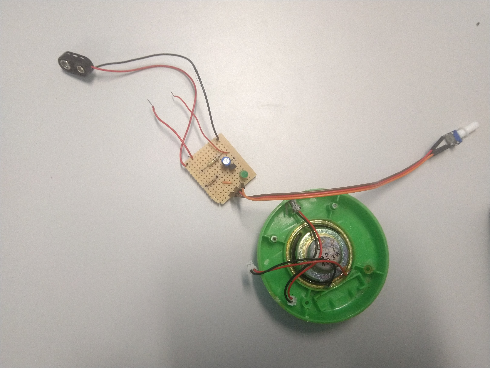

3/8/2020
Space Image and Sound started with a bang this semester, with my lecturer, Clint, setting us the task of writing a short proposal within the week. I instantly had the idea of using live radio data to produce some generative visuals etc. I went around researching and checking out the capabilities of Arduino radio components, but ultimately ran into issues as my computer doesn’t have a audio input. Also using Arduino would be pointless when I could just use an old radio. I kept prototyping and experimenting with Processing audio libraries, drawing waves according to the current audio volume. Here’s an example using the intro to “Tom's Diner” by DNA Feat. Suzanne Vega.
(Bonus points if you know why I chose this song)
For Space Image and Sound this semester I want bring focus away from the ‘end product’ and more towards tinkering, experimenting and hacking,
with the output to be a series of mini-projects that I can pull together in some way.
This gives me the opportunity to experiment with unusual interfaces and recycling old technology to generate sounds and graphics,
following my interest in analog audio as demonstrated by the excellent Look Mum No Computer (including his work ethic of high energy
fast paced experimentation), as well as being low-cost and an enjoyable creative experience.

During the week I also managed to convert my old Guitar Hero guitar controller into a wireless MIDI input, albeit quite limited. I realised now that ultimately what I wanted to do this semester was take the opportunity to experiment, hack and tinker. My proposal to Clint was:
With this goal in mind, I began to tinker. I thought that a good starting point would be to follow the excellent Look Mum No Computer SIMPLEST OSCILLATOR DIY PROJECT. I had a decent attempt at making it, but ultimately wasn’t successful, although I had fun making it and breaking some old stuff I had lying around.
Over the weekend, I came back to the radio idea after a fellow student suggested a “lo-fi” approach to the sound input, i.e literally just pointing a microphone at a radio speaker. I started messing around with this and had a great time going crazy on the floor of my bedroom, experimenting with Ableton Live effects and crazy inputs.
I eventually ended up producing a soundscape with the radio, tuning up and down the channels and ‘playing’ the radio as if it were an instrument,
a sort of live sampling. I edited the soundscape and paired it with some footage I took from around the house around the same time as the radio broadcast,
creating a ‘snapshot of time’.
Although this was overall quite quick to do and rather ‘lo-fi’ I ultimately want to have it all live, so no editing or videos or anything, and have generative art to go along with it (I’ve also been experimenting with MAX/MSP to achieve this). It’s a solid start to the paper however, and I’m really enjoying myself as doing stuff with audio is uncharted waters for me.
11/8/2020
Progress has been a bit slower over the past week, with my attention a bit more focused on other projects, but I spent today prototyping and generally messing around. Earlier on in the week I decided to take some time and step back to make sure I fully understood what I was working on. I hooked up the speaker that I had salvaged to an Arduino, and ran a PWM signal through it, which made a cool noise much to the dismay of my fellow studio space occupants. I decided to take it one step further and hooked up a MIDI keyboard to the speaker through Processing and the serial port. Notes played on the keyboard played through the speaker. After I did this, I decided I would try and get the oscillator from last week working, deeming it vital to my electronic sound generation experimentation. I couldn’t get it working using the technique I was following, but a fellow student recommended that I use the iconic 555 timer IC to get a pulsing signal. I hooked it up pretty quickly and made an LED flash as well as making the speaker make a buzzing sound. Very fun, very quick, very cheap, everything I wanted.
18/8/2020
Yikes. Literally an hour after I submitted the last post, we received an alert from the NZ Government that Auckland was heading into a level 3 lockdown. Yep, that pesky COVID-19 again. It’s really becoming a bit of a nuisance. Unfortunately I left all my kit and tools etc. in studio and haven’t been able to organise a rescue mission since, so I haven’t made much headway on the electronical tinkering side of things. However, I did have a short chat with Clint and Sam online, and we discussed what I could be doing effectively at this point, especially as it is currently unknown when we will be out of lockdown. We discussed some advantages of the humble radio, how it perseveres, how it will be one of the last parts of humanity to go in some apocalyptic event – morbidly appropriate in the current circumstances. I spent the afternoon taking some advice from them and produced a new radio soundscape. I’m a lot more happy with this one, I kept editing to a minimum and focused on effects, making the whole process more “live”. I also used some cool MIDI effects to generate a background ambient track.